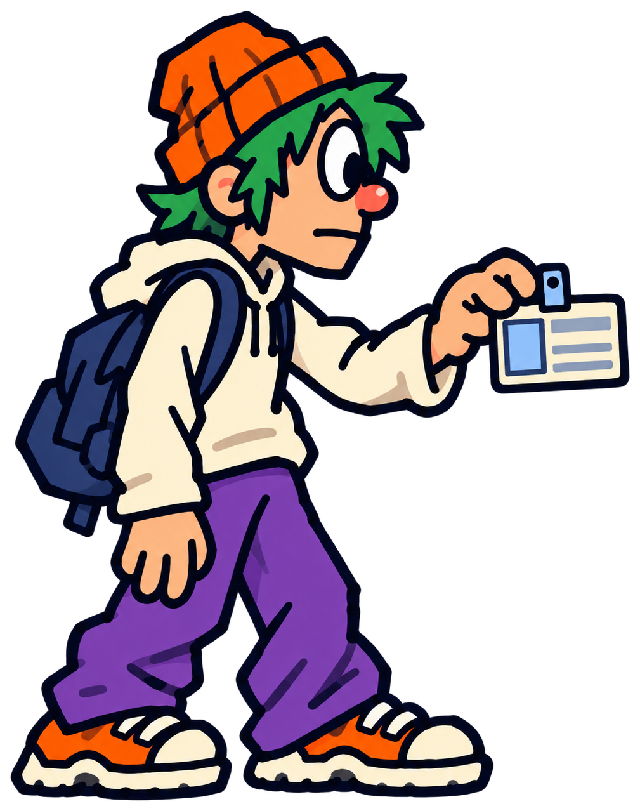
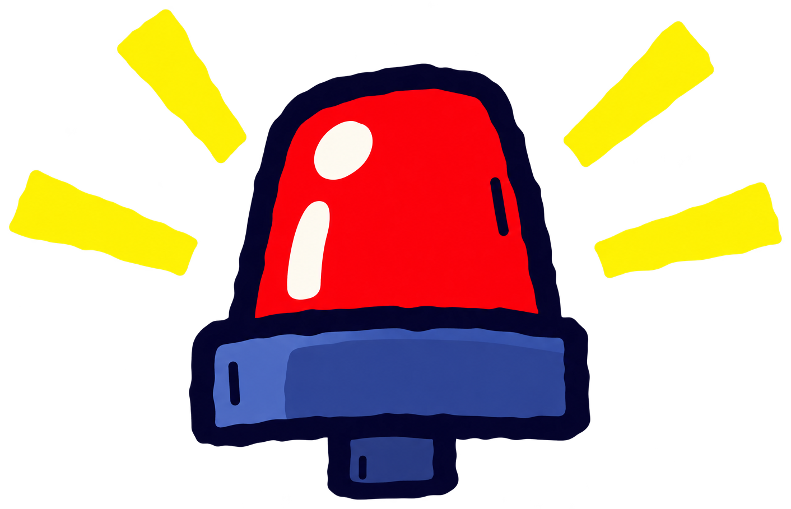
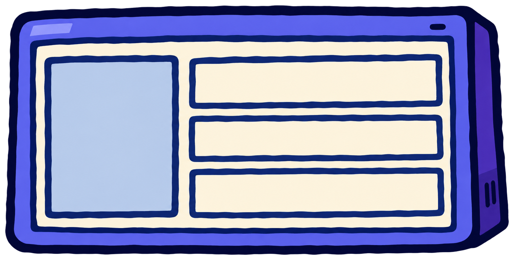

PONTOS0




- NOME
- MATRÍCULA
- SETOR
NOME
MATRÍCULA
SETOR

Dumb Ways
to PhishCrachá falso
Pausa
Opções
Crachá falso
Compare o crachá com o cadastro no monitor. Confira foto, nome, matrícula e setor.
Arraste o crachá para a direita quando tudo conferir. Se qualquer detalhe estiver diferente, arraste para a esquerda.
Cada decisão certa soma pontos. Um erro ou o fim do tempo custa um escudo. As rodadas continuam e o tempo diminui.
Teclado
Seta esquerda ou A barra. Seta direita ou D libera. P ou Esc pausa.
Sair da partida?
O recorde fica salvo. Esta partida será encerrada.
FIM DE JOGO
Fim de jogo
0pontos
Recorde 0
Não carregou.
Uma imagem da fase não abriu. Tente novamente.